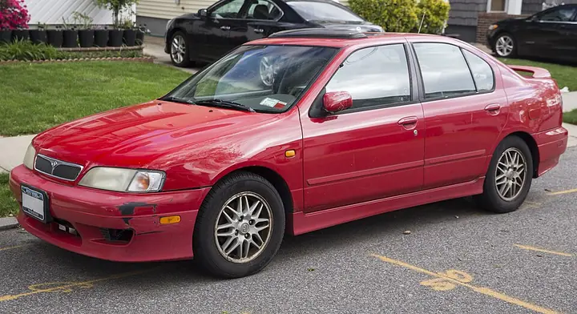
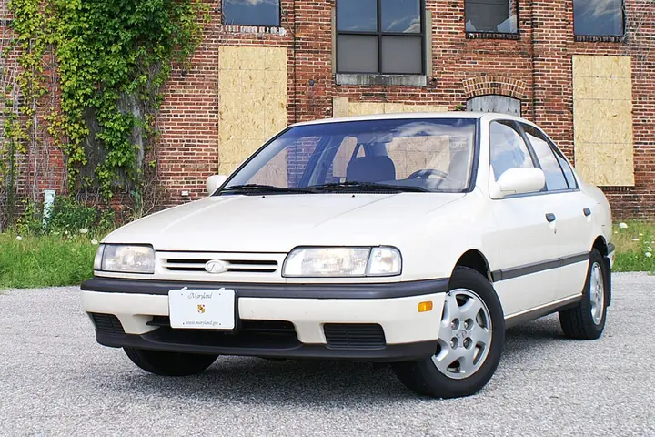

Infiniti G Line
Fourth generation (V36; 2007) · 2006–2015
Abstract
This generation of the Infiniti G Line was built September 2006–June 2015 (sedan) in Japan: Kaminokawa, Tochigi. Body styles: 4-door sedan, 2-door coupe, 2-door convertible. Layout: Front mid-engine, rear-wheel-drive / all-wheel-drive. Designed by Hideo Komuro (sedan: 2004); Shinichiro Irie (coupe: 2005, convertible: 2007).


1Specifications
| Production | September 2006–June 2015 (sedan)June 2007–2015 (coupe)2009–2015 (convertible) |
|---|---|
| Model years | 2007–2015 (sedan)2008–2015 (coupe)2009–2015 (convertible) |
| Assembly | Japan: Kaminokawa, Tochigi |
| Designer | Hideo Komuro (sedan: 2004); Shinichiro Irie (coupe: 2005, convertible: 2007) |
| Body style | 4-door sedan2-door coupe2-door convertible |
| Layout | Front mid-engine, rear-wheel-drive / all-wheel-drive |
| Platform | Nissan FM platform |
| Engine | Gasoline:3.5 L VQ35HR V6 306 hp (2007–2008 sedan)3.7 L VQ37VHR V6 330 hp (2008–2015 coupe)3.7 L VQ37VHR V6 328 hp (2008-2014 sedan)(2015 has different headlights)3.7 L VQ37VHR V6 348 hp (2010–2015 IPL coupe)2.5 L VQ25HR V6 218 hp (2010–2012 sedan) |
| Transmission | 6-speed manual5-speed RE5R05A automatic (2007–2008 sedan, 2008 coupe)7-speed RE7R01A automatic (all models, 2009—2015) |
| Wheelbase | 112.2 in |
| Length | 183.1 in (coupe)187.0 in (sedan)183.3 in (convertible) |
| Width | 72.9 in (convertible)71.8 in (coupe)69.8 in (sedan) |
| Height | Convertible55.1 inCoupe54.8 in (AT)54.9 in (MT)Sedan57.2 in (RWD)57.8 in (xAWD sedan) & 57.6 in |
| Weight | 3497 lb to 3704 lb |
| Also called | Nissan SkylineInfiniti Q60 (2013–2015 coupe and convertible)Infiniti Q40 (2014–2015 sedan) |
| Related | Nissan 350ZNissan 370ZInfiniti EXInfiniti FXInfiniti M |
2Versions
- 2007–2008 G35 Sedan
- Infiniti Coupe Concept (2006)
- 2008 G37 Coupe
- 2009-2013 G37 Sedan and Coupe
- 2009-2013 G37 Convertible
- Facelift
- 2011-2012 Infiniti G25
- Infiniti Performance Line (IPL)
3Previous generations



.jpg){kind=link}


4Generation by generation
Length +5% from the first to the last
P10 19904,440 mm
P11 19984,508 mm
V35 20024,630 mm
V36 20064,651 mm
Weight +24% from the first to the last
P10 19901,278 kg
P11 19981,352 kg
V35 20021,530 kg
V36 20061,586 kg